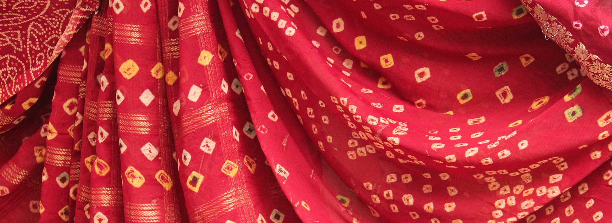
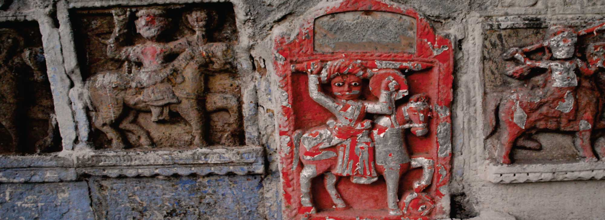

| Home | About Gujarat | Festivals | Food | Places To Visit | History | Art & Craft | |
|---|
Gujarat has an array of a rich variety of crafts. Its embroidery, bead work, wood crafts, printed and woven clothes, pottery and tribal art are expression of the folklore and festivals. The exclusive range of these works of craftsmen and woven imbued with the social and cultural hue of the region from where they have sprung are original in nature and craftsmanship. Today far moved from the hut or the village of the craftsman, pieces of handicrafts come to adorn the houses of the elite, the five star hotels both at home and abroad. Their products have received acclamation not only across the country but in overseas countries too. Our activities have helped in creating sustainable employment opportunities and income generation to the artisans working in the area of Handicrafts & Handloom, which is a non farming sector of our Indian economy. With a view that ample marketing opportunities are available to these artisans/weavers, the Corporation markets their products through its GARVI-GURJARI chain of emporia across the country and supply to exporters, which has created its market in overseas countries.
The district of Ahmedabad is a fascinating contrast of culture and history. It’s a centre where both the old and new coexist-ancient history with contemporary art, rapid industrialization with traditional handicraft. From sacred art to delicate metal crafts, the region is home to both antique and modern crafts that have become widely popular across the state and beyond.
Mata Ni Pachhedi Meenakari

You might have heard of Surat as a world-famous centre for the diamond industry, but the secret is that the city is also home to ornate mosques, colonial-style buildings, Parsi Agiaries and textile markets. In Gujarat, Surat district is also the heart of the craft of Sadeli or wood carving. The fine art of Zardosi embroidery and the striking Warli art are also practised in different parts of this district.
Sadeli Zardosi
The white sands of the Rann of Kutch that might originally draw you to the district. But it is the culture and tradition of the land that will implore you to stay. The Kutch district of Gujarat is a treasure trove of crafts, traditions and culture and is ingrained in the history of the land and its people. From metal molded to produce delicate silver jewellery to beautifully embroidered fabric, the Kutch district is home to a diverse array of colourful handicrafts. .
Mud Work Bandhani
One of the three princely states of Gujarat, a visit to Chhotaudepur is a treat for anyone with a penchant for history. The small town sits on the edge of a lake and is famous for its museums, palaces, temples and tribal areas rich in indigenous history. It also boasts of a rich culture of tribal crafts from paintings to furniture.
Pithora Painting Sankheda Furniture

Located in the peninsular region of Gujarat, Saurashtra covers about a third of the state. Its capital Rajkot was the childhood home of Mahatma Gandhi who spent the initial days of his childhood here. The city is the home of iconic places like the Mahatma Gandhi Museum and Watson’s Museum. Another district in Saurashtra is Surendranagar which is famous for producing high quality cotton. All its 11 districts combined, Saurashtra is the birthplace of some exquisite crafts.
Bead Work Tangaliya

Considered to be the state’s cultural capital, Vadodara is famous for its diverse architectural wonders. It’s home to Hindu and Jain shrines, a 15th century pre-Mughal fort and a variety of museums that boast of its rich heritage. Gujarat’s third largest city, the district is full of surprises-not least of which is a dinosaur museum! A visit to Vadodara promises a visit enriched in knowledge, plus some beautiful takeaways too, like its stunning collection of silver.
Stone carving (Sompura) Silver Ornaments
Located in the northeastern part of the state, the Sabarkantha district is home to both tribal villages and modern, bustling cities. You’ll find everything from glorious heritage hotels to quaint little villages, each more charming than the next. But it’s the people of the region that make it truly special. From its incredible array of terracotta figurines to its beautiful, simple coir artefacts, the artisans of Sabarkantha have become well known for their creative and meaningful work.
Terracota

| Home | About Gujarat | Festivals | Food | Places To Visit | History | Art & Craft | |
|---|